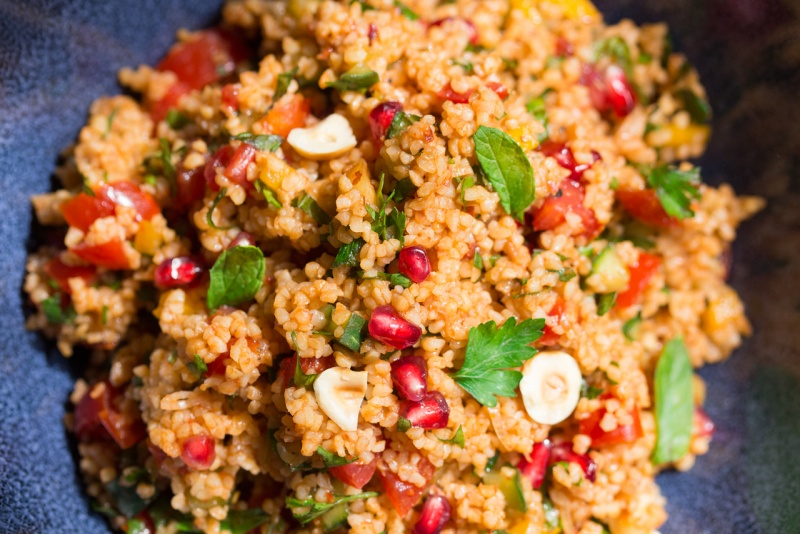

Kısır

Although, traditionally kisir is made with bulgur wheat, if you are avoiding gluten, you might want to use quinoa,
millet or even rice instead. Kisir is one of these dishes that tastes even better the day after
so it’s great for making a big batch in advance and bringing it into work the next day. If, like me, you like mezze-style meals
kisir makes a great addition to any mezze.
Its zingy, spicy, and fresh taste will excite your palate and its vibrant colours will brighten up your table.
Ingredients
- 300 g / 1½ cup medium bulgur wheat
- 2 tbsp of tomato paste
- 25 plum tomatoes / 3 regular large tomatoes
- 1 Lebanese cucumber, diced finely
- 1 banana pepper, diced finely
- 2 spring onions, white part finely sliced
- 2 tbsp / 30 ml pomegranate molasses*
- 3 tbsp / 45 ml extra virgin olive oil
- 2 tsp sea salt + more to taste
- 3-4 level tsp pul biber (Turkish chilli) / other mild chilli
- freshly ground pepper, to taste
- seeds from ½ pomegranate
- 40 g of hazelnuts, lightly toasted (optional)
- handful of fresh mint, leaves finely shredded
- handful of fresh parsley, finely shredded
How to Make Kısır Recipe
- Boil a kettle of water, you will need about 700 ml to pour over bulgur wheat. The best ratio in my opinion is 1 volume of bulgur wheat to a bit less than 2 volumes of water.
- Place bulgur wheat into a large bowl, pour boiling water over it and cover immediately. Let it sit for 20 minutes without taking the lid off.
- If you are using regular tomatoes, deseed them first and then chop into a fine dice. Plum tomatoes can be diced without deseeding as they contain much less water.
- Mix tomato paste, olive oil and pomegranate molasses together. Once the bulgur wheat is ready, mix oil/tomato paste/pomegranate molasses mixture into it.
Use your hands to incorporate it well. Now mix in diced veg, chopped herbs, hazelnuts and most of the pomegranate seeds. Season with salt, pepper and chilli.
Start off with 1 level tsp of salt, taste and add more if needed.
- Let it stand for about 20 mins for the flavours to marry up. Serve sprinkled with extra pomegranate seeds and a few whole mint and parsley leaves.
HOME